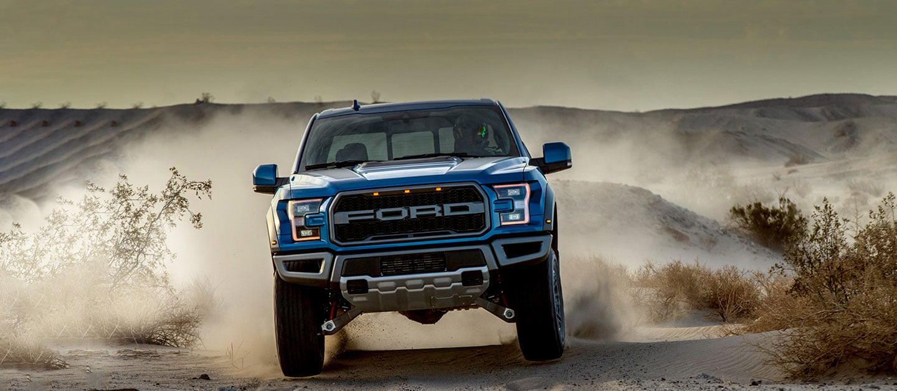

Experimenta la libertad de superar obstáculos y dominar cualquier camino con Ford Raptor 2020,
la camioneta pick up diseñada y construida para potenciar tus aventuras.
¡Desata sus 450 caballos de fuerza y prepárate para una conducción de poder total!
La camioneta pick up Ford Raptor 2020 no conoce límites, sólo enciéndela y te llevará a donde quiera que vayas, superando cualquier obstáculo.

Cada elemento de Ford Raptor 2020 fue diseñado para aumentar su desempeño y superar los retos que el terreno represente.
$1,520,700 - $1,582,300
Motor
Motor 3.5L V6
Twin-Turbo EcoBoost®
con 450 HP,
510 lb-pie de torque
Pasajeros
5